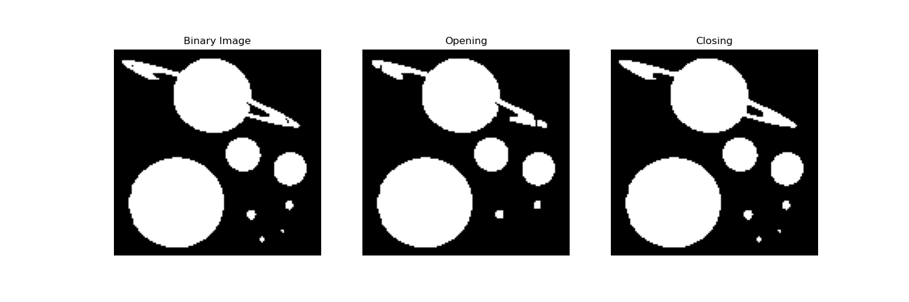

6. Simple Animation with Python
Hi,
The notebook linked below is about simple animations that can be created with python. The output format is a GIF file.
Feel free to take the code that creates the animation and use it for different scenarios.
In the past, I have experienced that GIFs can help making complex evolutions easy to visualize and
also prevent from sending mulitple files with varied parameters instead of one.
GITHUB.
TAGS:
animation python visualization noise
Posted on August 07, 2023
5. Hypothesis Test Explained in a Simple Setup
Hi,
This post will be about hypothesis testing. I will explain the concept of hypothesis testing in a simple setup. It will make you doubt on hasty conclusions
someone is making and prove them wrong with the correct statistical approach. The post also has an additional section about the convergence of the
probabilities towards the true probabilities for large sample sizes visualized with python code. The code is available on my
GITHUB.
TAGS:
statistics python code hypothesis error confidence interval convergence plots
Posted on July 25, 2023
4. Presentations with Markdown Syntax (Marp)
Hello,
The post will be about the creation of presentations with Markdown syntax. There are multiple tools available on the market.
One of them is Marp which can be easily used as a VSCode extension. The presentations can be quickly generated, edited and
exported to PDF or HTML. Have a look at the example
MD file and the generated
PDF file on my GITHUB.
TAGS:
markdown lightweight presentation code css html vscode fast simple template
Posted on July 16, 2023
3. TODO Lists in Markdown
Hello folks,
This post will be about TODO lists in Markdown. I will show you how to create TODO lists in Markdown and
enhance the basic structure with some more features. Feel free to inspire yourself and use the code for your
own TODO lists.
The markdown file describing the changes is on my GitHub:
TODO List.
TAGS:
markdown todo html css organize tasks notes markup lightweight code
Posted on July 10, 2023
2. Morphological Operations - Opening and Closing
Hi all,
In this post, I give a short and practical introduction to the morphological operations opening and closing.
The operations are explained with the help of a Python code snippet and some plots. Have fun!
And of course, the source code is available
here.

TAGS:
opening closing morphological image processing python plots erosion dilation
Posted on June 20, 2023
1. Intuitive Introduction to KL Divergence
Hi together,
In this post, I want to give an intuitive introduction to the KL Divergence. The KL Divergence is a measure
of how different two probability distributions are.
The KL Divergence is visualized for two Gaussian distributions in an explanatory way. Hope you enjoy it!
And of course, the source code is available
here.
TAGS:
blogpost kl KL_divergence probability theory visualization 1 gif math information statistics
Posted on June 14, 2023
0. Initial
Hi together, This is my blog. The topics will be completely random and will just be about things I have
found interesting at a particular time.
Just write me an email if you want to discuss something with me. And since this is a more scientifically
related blog, I am writing the obligatory Hello World! in Python:
print("Hello World!")
TAGS:
initial first 0 welcome hello world python code snippet
Posted on June 13, 2023